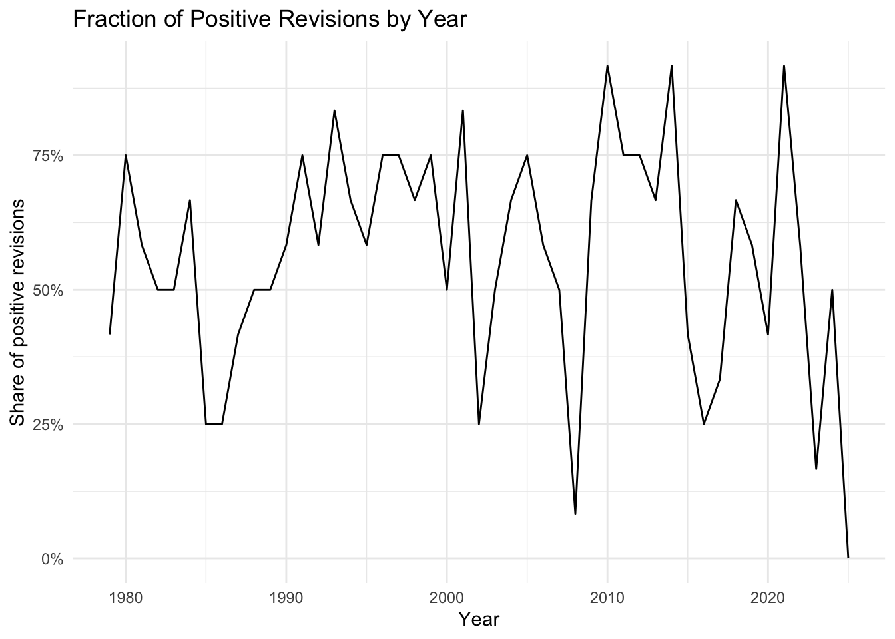
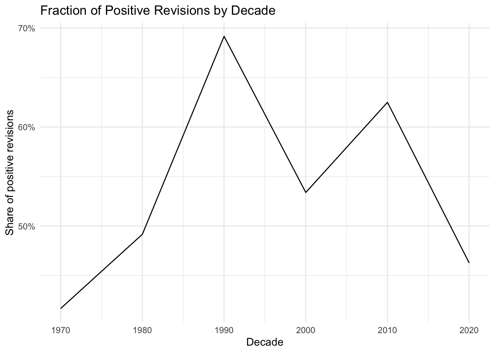
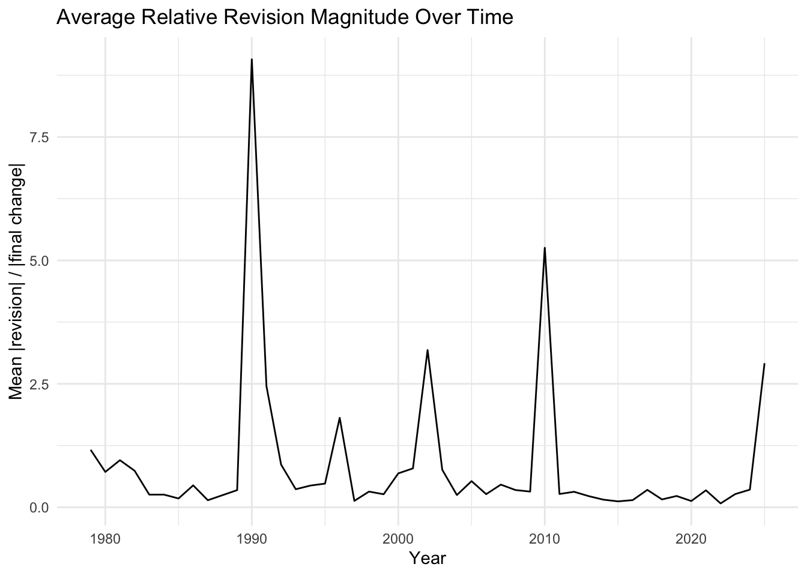
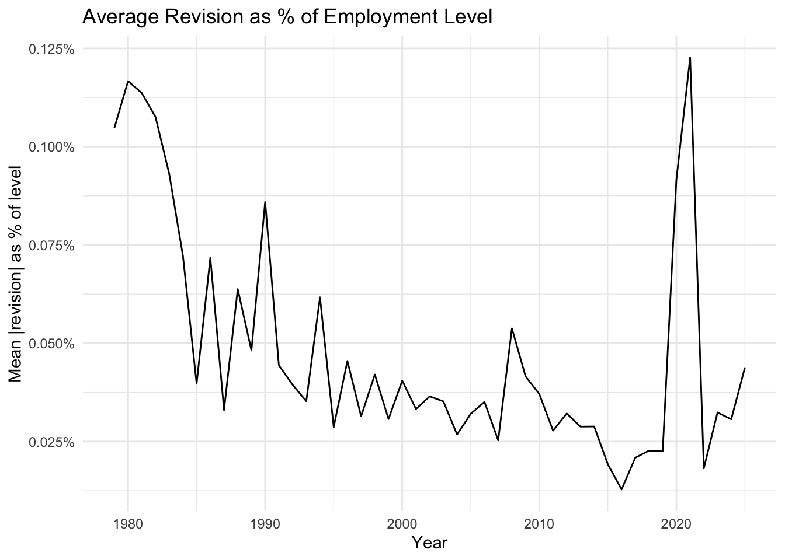
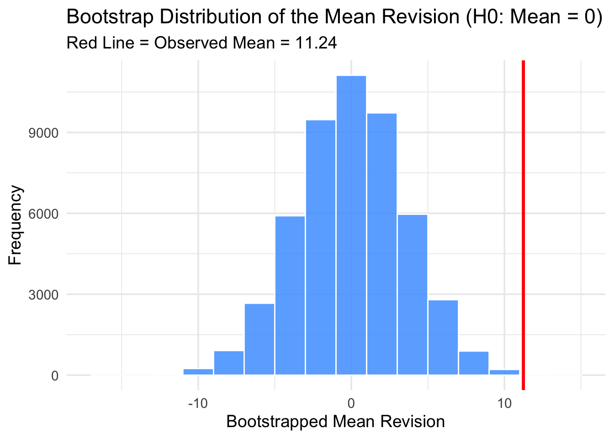
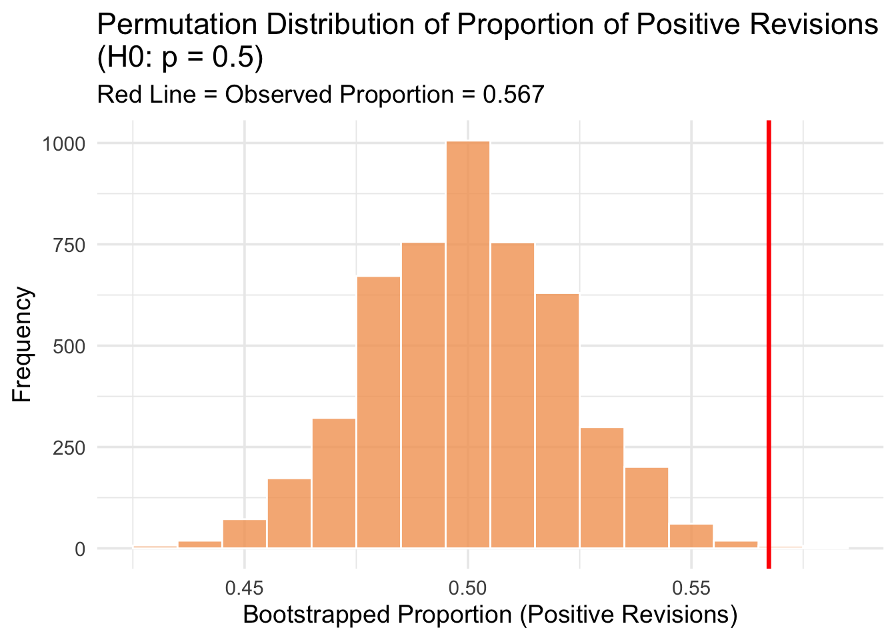

Mini-Project #04: Analysis of CES Payroll Employment Revisions (1979–2025)
Author
Xuejian Wang
Introduction
This project analyzes revisions to the Bureau of Labor Statistics (BLS) Current Employment Statistics (CES) payroll data from 1979–2025. Using publicly available monthly employment levels and over-the-month changes, the analysis examines how initial estimates differ from later revisions, how these patterns vary over time, and whether revisions reveal systematic bias or simple statistical noise. Through visualization, descriptive statistics, and hypothesis testing, the project evaluates both the accuracy and the reliability of CES data—and assesses public claims about alleged flaws in BLS reporting.
1. Data Acquisition
1.1 Final CES Estimates (Level)
This dataset contains final, seasonally adjusted monthly estimates of U.S. Total Nonfarm Payroll Employment from the Bureau of Labor Statistics’ Current Employment Statistics (CES) program. The data span 1979–2025 and report the number of employees on nonfarm payrolls (in thousands). These figures represent the most accurate, revised estimates and are widely used as a key indicator of overall labor market conditions and economic activity in the United States.
Code
library(httr2)library(rvest)library(dplyr)library(tidyr)library(lubridate)library(stringr)## 1. Build the POST request (DevTools → Network → All → Payload)req_final <-request("https://data.bls.gov/pdq/SurveyOutputServlet") |>req_method("POST") |>req_body_form(request_action ="get_data",reformat ="true",from_results_page ="true",from_year ="1979",to_year ="2025",Go.x ="14",Go.y ="11",initial_request ="false",data_tool ="surveymost",series_id ="CES0000000001",years_option ="specific_years" )res_final <- req_final |>req_perform() # Send the request and receive the responsehtml_final <- res_final |>resp_body_html() # Extract the HTML body for rvest parsing## 2.Use rvest to pull out the HTML table (SelectorGadget → #table0) tbl_raw <- html_final |>html_element("#table0") |>html_table() |>as_tibble()## 3. Clean: drop footnote row, pivot longer, build datesces_final <- tbl_raw |># Drop the “P : preliminary” footnote rowmutate(Year =suppressWarnings(as.integer(Year))) |>drop_na(Year) |># Wide (Jan–Dec) -> long formatpivot_longer(cols =-Year,names_to ="month",values_to ="level" ) |># Build a proper Date column and numeric levelmutate(month =str_sub(month, 1, 3), # e.g. "January" -> "Jan"date =ym(paste(Year, month)), # lubridate::ymlevel =as.numeric(level) ) |>select(date, level) |>arrange(date) |>drop_na()library(DT)datatable( ces_final,caption = htmltools::tags$caption(style ="caption-side: top; text-align: middle; font-size:150%;","CES Final Levels (Nonfarm Payroll Employment), 1979–2025" ), colnames =c("Date", "Level (thousands)" ),options =list(pageLength =5,searching =FALSE,info =FALSE,paging =TRUE,autoWidth =TRUE )) |>formatCurrency(columns ="level",currency ="", interval =3, mark =",", digits =0 )
1.2 CES Revisions
This dataset contains seasonally adjusted monthly revisions (in thousands) to U.S. Nonfarm Payroll Employment over-the-month changes from 1979 to 2025. For each month, it reports:
the initial (original) estimate of employment change,
the final (third) revised estimate, and
the resulting revision.
Because the final estimates for March and April 2003 are missing, those months are removed from the dataset. These revision data illustrate how early employment estimates are updated as more complete information becomes available, providing insight into the accuracy of preliminary BLS releases and the behavior of monthly labor-market measurement revisions over time.
Code
library(purrr)# Build a browser-like requestreq <-request("https://www.bls.gov/web/empsit/cesnaicsrev.htm") |>req_user_agent("Mozilla/5.0 (Macintosh; Intel Mac OS X 10.15)") |>req_headers("accept"="text/html,application/xhtml+xml,application/xml;q=0.9,*/*;q=0.8","accept-language"="en-US,en;q=0.5" )resp <- req |>req_perform() page <- resp |>resp_body_html() # Create data frameces_revision_years <-function(page, year) {# Select the table for this year using its id="1979", "1980", ... tab <- page |>html_element(paste0("#", year)) df <- tab |>html_table(header =FALSE, fill =TRUE) |>slice(1:15) |># first 15 rows = months# positions: 1 = Month, 2 = Year, 3 = 1st, 5 = 3rdselect(month =1,year =2,original =3,final =5 ) |>mutate(month =str_replace(month, "\\.", ""), # clean month labels "Jan." → "Jan"date =ym(paste(year, month)),original =as.numeric(original),final =as.numeric(final),revision = final - original ) |>select(date, original, final, revision) |>drop_na() df}# Apply Function Over All Years (1979–2025)years <-1979:2025ces_revisions <-map_dfr(years, ~ces_revision_years(page, .x))# Check & Delete revision = NA* when final = 0 missing (2003 March&April)ces_revisions <- ces_revisions |>filter(final !=0)library(DT)datatable( ces_revisions,caption = htmltools::tags$caption(style ="caption-side: top; text-align: middle; font-size:150%;","CES Revisions to Over-the-Month Changes (Nonfarm Payroll Employment), 1979–2025" ), colnames =c("Date", "Original (thousands)","Final (thousands)","Revision (thousands)" ),options =list(pageLength =5,na ="NA",searching =FALSE,info =FALSE,paging =TRUE,autoWidth =TRUE )) |>formatCurrency(columns =c("original","final","revision"),currency ="", interval =3, mark =",", digits =0 )
2. Data Integration and Exploration
2.1 CES All (Final Levels and Revisions)
This table merges the CES revision data with the final employment level data for each month from 1979–2025. By joining the two datasets on the date, it brings together:
the original employment estimate of over-the-month changes
the final revised estimate of over-the-month changes
the resulting revision of over-the-month changes
the final level of total employment numbers
After merging, the table also adds several useful variables:
Year and month extracted from the date
Decade, based on the year
Relative revision magnitude: the size of the revision relative to the final revised estimate
Absolute revision percentage (abs_rev_pct): the size of the revision as a percent of total employment level for that month
Together, this combined dataset provides a unified view of both CES employment levels and the revisions made to the estimates, enabling deeper analysis of revision patterns over time.
The largest positive revision in CES history occurred in November 2021, when the initial estimate was revised upward by 437,000 jobs. In contrast, the biggest negative revision occurred in March 2020, when the initial estimate was revised downward by 672,000 jobs, reflecting the extreme labor market volatility at the onset of the COVID-19 pandemic.
The share of positive revisions varies substantially from year to year—often swinging anywhere from around 25% to 90%. This highlights how noisy and unpredictable annual CES revisions can be.
However, when we aggregate the data by decade, a much clearer pattern emerges. Positive revisions were below 50% before 1980s, increased over 50% from 1990s to 2010s, and then dropped below 50% in the 2020s.
Overall, while annual revision rates fluctuate widely, the decade-level view shows a smoother long-run trend: positive revisions were most common in the 1990s and have become noticeably less frequent in recent years.
Code
frac_pos_year <- ces_all |>group_by(year) |>summarise(frac_positive =mean(revision >0, na.rm =TRUE)) # Or, sum(revision > 0) / n()ggplot(frac_pos_year, aes(x = year, y = frac_positive)) +geom_line() +scale_y_continuous(labels = scales::percent) +labs(title ="Fraction of Positive Revisions by Year",x ="Year",y ="Share of positive revisions" )+theme_minimal()

Code
frac_pos_decade <- ces_all |>group_by(decade) |>summarise(frac_positive_de =mean(revision >0, na.rm =TRUE))ggplot(frac_pos_decade, aes(x = decade, y = frac_positive_de)) +geom_line() +scale_y_continuous(labels = scales::percent) +labs(title ="Fraction of Positive Revisions by Decade",x ="Decade",y ="Share of positive revisions" )+theme_minimal()

2.4 The Relative CES Revision Magnitude
Relative CES revision magnitudes are generally small and stable across most years, staying well below 1. However, the series shows occasional sharp spikes, notably around 1990, 2002, and 2010, and possibly 2025, when revisions were unusually large or final changes were very small. Overall, revisions are typically modest, with only a few exceptional years driving large relative ratios.
Code
# summary over time (e.g., yearly mean)rel_mag_year <- ces_all |>group_by(year) |>summarise(mean_rel_rev_mag =mean(rel_rev_mag, na.rm =TRUE))ggplot(rel_mag_year, aes(x = year, y = mean_rel_rev_mag)) +geom_line() +labs(title ="Average Relative Revision Magnitude Over Time",x ="Year",y ="Mean |revision| / |final change|" ) +theme_minimal()

2.5 Percentage of absolute CES revision given levels
Absolute revisions as a share of employment level were highest in the late 1970s and early 1980s, then declined and stabilized at much lower levels (around 0.02–0.05%) through the 1990s–2010s. A brief pandemic-era spike appears around 2020, but levels returned closer to normal afterward.
Code
pct_level_year <- ces_all |>group_by(year) |>summarise(mean_pct_level =mean(abs_rev_pct, na.rm =TRUE))ggplot(pct_level_year, aes(x = year, y = mean_pct_level)) +geom_line() +labs(title ="Average Revision as % of Employment Level",x ="Year",y ="Mean |revision| as % of level" ) +scale_y_continuous(labels = scales::label_percent()) +theme_minimal()

2.6 Monthly Revision Pattern
There are some months that systematically have larger or smaller CES revisions. Based on the chart:
Larger revisions tend to occur in March, April, and September, with September showing the highest average absolute revision (around 80k).
Smaller revisions are typically found in January and February, which have the lowest average revisions (around 45–50k).
The middle months of the year (May–August) and last months (October-December) generally fall in a moderate range (around 50–55k).
This suggests that revisions are not evenly distributed across the calendar year, with early-spring and early-fall months showing systematically larger adjustments.
Revisions are sizable(tens of thousands of jobs) and represent a non-trivial share of the reported monthly employment change.
The average CES revision is about 11.24 thousand jobs, meaning that on average, the first published payroll change differs from the final estimate by more than eleven thousand jobs.
The average absolute revision is much larger, with about 56.72 thousand jobs, reflecting that positive and negative revisions cancel out when averaged, but the typical size of the adjustment is around fifty-seven thousand.
On a relative basis, the average absolute revision is about 0.05% of that month’s employment level, meaning the typical revision is roughly 0.05 percent of the final reported payroll level for that month.
Apr2024_Mar2025 <- ces_all |>filter(date <=as.Date("2025-03-01"), date >=as.Date("2024-04-01")) |>summarise(sum_rev =sum(revision, na.rm =TRUE) )library(DT)datatable( Apr2024_Mar2025,colnames =c("Revision from April 2024 to March 2025 (thousands)"),options =list(pageLength =5,searching =FALSE,info =FALSE,paging =TRUE,autoWidth =TRUE )) |>formatCurrency(columns ="sum_rev",currency ="", interval =3, mark =",", digits =0 )
3. Statistical Analysis
Using formal statistical inference, several hypotheses about CES revisions are tested. A binomial proportion test shows whether the fraction of negative revisions increased after 2000; the result indicates whether post-2000 estimates exhibit systematically more downward corrections. A one-sample t-test evaluates whether the average revision differs from zero, allowing us to assess overall bias in initial CES reports. Additional tests (e.g., comparing pre- and post-2020 revisions or testing correlation between employment level and revision size) further illuminate whether revisions have structurally changed over time. Together, these tests help determine whether observed differences are statistically meaningful rather than random fluctuation.
3.1 Post-2020 negative revisions: no significant increase
There is no statistically significant evidence that the fraction of negative CES revisions increased after the year 2000. The results show:
A p-value of 0.373, which is far above the 0.05 threshold.
A confidence interval that crosses zero, indicating the true difference could be positive, negative, or zero.
We cannot conclude that negative revisions became more common after 2000. The data are consistent with no meaningful change in the share of negative CES revisions across the two periods.
3.2 The average revision is significantly different from zero
A one-sample t-test shows that the mean CES revision is statistically significantly different from zero. This indicates that the observed average revision is unlikely to have occurred by chance.
The very small p-value (far below 0.05) provides strong evidence that the true mean revision is not zero.
The sample mean revision is positive (≈11.24 thousand jobs), suggesting that initial CES estimates tend to be revised upward on average.
The 95% confidence interval (approximately 4.3 to 18.2) is entirely above zero, reinforcing the conclusion that the true average revision is positive.
Overall, the results imply a systematic upward revision pattern in CES estimates rather than random noise around zero.
The revisions do not show a statistically significant upward shift after 2020. This means we cannot conclude that initial CES estimates became more inaccurate or volatile based on mean revision size alone. This conclusion is supported by:
The p-value (0.4869) is much greater than 0.05, indicating no statistically significant difference in average revisions before vs. after 2020.
The estimated mean difference (~ +12.28k jobs) suggests revisions are somewhat larger post-2020, but this difference is not statistically meaningful.
The 95% confidence interval (−22.76k to +47.32k) includes zero, reinforcing that we cannot rule out no difference at all.
There is no statistically significant evidence that CES revisions became larger after 2020, based on mean revision size.
3.4 Revisions is smaller when the underlying change in CES level is larger
Although the effect is modest, the evidence suggests that larger underlying CES levels are associated with slightly smaller revisions, not larger ones.
The estimated correlation between the CES employment level and the absolute size of revisions is -0.1375, indicating a small negative relationship: when the CES level is higher, revisions tend to be slightly smaller in magnitude.
The very small p-value (0.0011) show that this correlation is statistically significantly different from zero at any conventional significance level (1%, 5%, etc.).
The 95% confidence interval (-0.2181 to -0.0550) confirms that the true correlation is likely negative rather than zero or positive.
Statisticians often want to know whether something they observe—like an average revision in CES data—is real or could have happened just by random chance. Traditionally, we use mathematical formulas that assume data follow certain shapes (like the bell curve). But today’s computers allow a different approach: Instead of relying on formulas, we can simulate alternate versions of the world thousands of times and see what happens. By comparing the real data to thousands of simulated worlds, we can judge whether our findings are meaningful. This technique is called computationally intensive inference, and it allows us to answer statistical questions even when formulas don’t apply.
Permutation Test Flowchart
flowchart TD
A[Step 1: Question] --> B[Step 2: Data]
B --> C[Step 3: Null Hypothesis]
C --> D[Step 4: Permutation Procedure]
D --> E[Step 5: Test Statistic]
E --> F[Step 6: Sampling Distribution]
F --> G[Step 7: P-value]
G --> H[Step 8: Conclusion]
Bootstrap Test Flowchart
flowchart TD
A[Step 1: Original Sample] --> B[Step 2: Resample With Replacement]
B --> C[Step 3: Compute Statistic]
C --> D[Step 4: Repeat Many Times]
D --> E[Step 5: Bootstrap Distribution]
E --> F[Step 6: Calculate SE, CI, or p-value]
F --> G[Step 7: Interpretation]
4.2 Bootstrap test: The average revision is significantly different from zero
As a second check, using the same idea of resampling we applied in earlier tests, we run a bootstrap hypothesis test to see whether the average CES revision could plausibly be zero. Under the null hypothesis (mean = 0), we repeatedly resample the data with replacement to create a distribution of mean revisions expected if the true mean were zero.
The observed mean revision is about 11.24, while the bootstrap distribution is centered near zero. None of the thousands of resampled means come close to this observed value, resulting in a very small p-value (~ 0.001).
Therefore, such an extreme mean would be extremely unlikely if the true mean were zero. This provides strong evidence that the average CES revision is not zero and tends to be systematically positive.
Code
library(infer)library(tidyverse)# Bootstrap distribution of mean revisions under null: mean = 0boot_mean <- ces_all |>specify(response = revision) |>hypothesize(null ="point", mu =0) |>generate(reps =50000, type ="bootstrap") |>calculate(stat ="mean")# Observed meanobs_mean <- ces_all |>summarize(mean_rev =mean(revision)) |>pull()# p-valuep_boot <- boot_mean |>get_p_value(obs_stat = obs_mean, direction ="two-sided")# show in a tableboot_table <- tibble::tibble(obs_mean = obs_mean,p_value = p_boot$p_value)library(DT)datatable( boot_table,colnames =c("Observed Mean", "P-Value" ),options =list(pageLength =5,searching =FALSE,info =FALSE,paging =TRUE,autoWidth =TRUE )) |>formatCurrency(columns =c("obs_mean", "p_value"),currency ="", interval =3, mark =",", digits =4 )
4.3 Three Different Computational Tests
Test1: Bootstrap mean revision (computational analogue to t-test)
The first test uses a bootstrap randomization procedure to assess whether the mean CES revision differs from zero (a computational analogue to a t-test). Under the null hypothesis that the true mean is 0, we repeatedly resample the data and build a distribution of bootstrapped means. The observed mean is far outside this distribution, yielding a very small p-value.
In conclusion, there is strong evidence that the average revision is not zero—and is instead systematically positive.
Code
mean_boot <- ces_all |>specify(response = revision) |>hypothesize(null ="point", mu =0) |>generate(reps =50000, type ="bootstrap") |>calculate(stat ="mean")mean_test <- mean_boot |>get_p_value(obs_stat = obs_mean, direction ="two-sided")# Plot the bootstrap distribution of the mean under H0: mean = 0obs_mean <-mean(ces_all$revision)mean_boot |>ggplot(aes(x = stat)) +geom_histogram(binwidth =2,fill ="#4DA1FF", # purple (not blue or green)color ="white",alpha =0.85 ) +geom_vline(xintercept = obs_mean,color ="red",size =1.2 ) +labs(title ="Bootstrap Distribution of the Mean Revision (H0: Mean = 0)",subtitle =paste("Red Line = Observed Mean =", round(obs_mean, 2)),x ="Bootstrapped Mean Revision",y ="Frequency" ) +theme_minimal(base_size =14)

Test2: Bootstrap median revision (analogue to Wilcoxon test)
The second test uses a bootstrap approach to evaluate whether the median CES revision equals zero, which makes it more robust to outliers than a mean-based test. Under the null hypothesis that the true median is 0, thousands of bootstrap samples are generated to form the sampling distribution. Most of these bootstrapped medians fall near zero.
However, the observed median revision (≈ 9) lies far to the right of this distribution, as shown by the red line on the histogram. Because the observed value is so extreme compared to what we’d expect under the null, the test produces a very small p-value.
As previous claim, there is strong statistical evidence that the median CES revision is not zero—typical revisions tend to be positive.
Code
median_test <- ces_all |>specify(response = revision) |>hypothesize(null ="point", med =0) |>generate(reps =50000, type ="bootstrap") |>calculate(stat ="median") |>get_p_value(obs_stat =median(ces_all$revision),direction ="two-sided" )# Bootstrap distribution of the median revision under H0: median = 0boot_median <- ces_all |>specify(response = revision) |>hypothesize(null ="point", med =0) |>generate(reps =5000, type ="bootstrap") |>calculate(stat ="median")# Observed medianobs_median <-median(ces_all$revision)# Plotboot_median |>ggplot(aes(x = stat)) +geom_histogram(binwidth =2, fill ="#7CCBA2", color ="white", alpha =0.85) +geom_vline(xintercept = obs_median, color ="red", size =1.2) +labs(title ="Bootstrap Distribution of the Median Revision (H0: Median = 0)",x ="Bootstrapped Median Revision",y ="Frequency",subtitle =paste("Red Line = Observed Median =", round(obs_median, 2)) ) +theme_minimal(base_size =14)
Test3: Permutation test for probability of positive revisions (analogue to proportion test)
This test checks whether positive CES revisions happen more than half the time. We convert each revision into TRUE/FALSE and test the null hypothesis that P(revision > 0) = 0.5. By shuffling the labels many times, we create a permutation distribution of the proportion of positive revisions under the null. The observed proportion (≈0.567) is obviously to the right of this distribution, giving a very small p-value.
We conclude and testify that positive revisions occur significantly more than 50% of the time, meaning CES initial estimates tend to be biased upward.
Code
prop_test_boot <- ces_all |>mutate(pos =ifelse(revision >0, "TRUE", "FALSE")) |>specify(response = pos, success ="TRUE") |>hypothesize(null ="point", p =0.5) |>generate(reps =50000, type ="draw") |># <-- FIXEDcalculate(stat ="prop") |>get_p_value(obs_stat =mean(ces_all$revision >0),direction ="two-sided" )# Create TRUE/FALSE indicatorces_prop <- ces_all |>mutate(pos = revision >0)# Generate permutation distributionperm_dist <- ces_prop |>specify(response = pos, success ="TRUE") |>hypothesize(null ="point", p =0.5) |>generate(reps =5000, type ="draw") |>calculate(stat ="prop")# Observed proportionobs_prop <-mean(ces_all$revision >0)# Plot permutation distributionperm_dist |>ggplot(aes(x = stat)) +geom_histogram(binwidth =0.01, fill ="#F4A261", color ="white", alpha =0.8) +geom_vline(xintercept = obs_prop, color ="red", size =1.2) +labs(title ="Permutation Distribution of Proportion of Positive Revisions\n(H0: p = 0.5)",subtitle =paste("Red Line = Observed Proportion =", round(obs_prop, 3)),x ="Bootstrapped Proportion (Positive Revisions)",y ="Frequency" ) +theme_minimal(base_size =14)

5. Fact Check BLS Revisions
Fact Check 1: E.J. Antoni’s Claim that Monthly Job Reports Are “Unreliable” Due to Large Revisions
E.J. Antoni’s Claim: Monthly CES job reports are unreliable because the initial numbers are frequently revised by large amounts and often downward.
What the data actually show
Although the largest monthly revisions reached positive 437k and negative 672k jobs, these extremes occurred during pandemic volatility and are not typical.
On average, revisions are small (about 11k jobs) with an absolute size around 56.7k, far below what claims of unreliability suggest.
The share of positive revisions varies widely from 25% to 90%, showing that both upward and downward adjustments happen regularly rather than one direction dominating.
The most recent 12-month period shows a sizable cumulative downward revision of negative 301k jobs, but such clusters appear occasionally and do not signal a long-term trend.
Visualizations confirm that revisions are noisy: extreme changes occur mainly in crisis periods, and annual patterns fluctuate rather than showing a consistent bias.
Statistical evidence
A series of hypothesis tests from Task 4 shows that CES revisions do not behave the way Antoni’s claims:
Negative revisions have not become more common after 2000 (p = 0.373), contradicting claims of a structural shift in recent decades.
Revisions did not become significantly larger after 2020 (p = 0.4869), and apparent jumps during pandemic years reflect volatility, not a new permanent bias.
Revisions are slightly smaller when payroll levels are higher (correlation = -0.1375, p = 0.0011), meaning they shrink rather than grow when the labor market expands.
Taken together, these statistical tests show that CES revisions are statistically stable over time, and nowhere near large enough to support Antoni’s claim of systematic misrepresentation.
Verdict
E.J. Antoni’s claim overstates the problem. While CES estimates do get revised, the dataset shows:
Typical revisions are small, not large
Both upward and downward revisions occur
Extreme revisions are tied to unusual shocks, not routine reporting
The average revision is only about 11k, not large enough to undermine the report’s reliability
No evidence of a systematic downward pattern in monthly revisions
Monthly job reports are imperfect but they are not unreliable in the way Antoni’s suggests.
Rating
Mostly False — The claim is based on real revisions, but it exaggerates their size, frequency, and direction, and is inconsistent with the long historical record of CES revision behavior.
Fact Check 2: AEI’s claim that BLS revisions systematically distort the employment narrative
AEI’s claim (2025): Monthly Current Employment Statistics (CES) job estimates are so frequently and substantially revised that they “distort the employment narrative”, making initial job-growth reports unreliable.
What the CES data show
Typical revision size is modest: The mean monthly revision is about 11.2k jobs, and the median revision is around 9k, which is small relative to total nonfarm employment level.
Most revisions are small in absolute terms: The average absolute revision is about 57k jobs, far smaller than what would “flip the narrative.”
Rare large swings occur but are tied to unusual events: The largest upward (437k) and downward (-672k) revisions in the dataset correspond to major disruptions (e.g., pandemic-era volatility), not “normal months.”
Statistic evidence
Mean revision is not 0: A t-test confirms a small upward bias (p ≈ 0.0015).
No evidence of larger revisions post-2020: Difference-in-means test yields p ≈ 0.49, not significant.
Revision magnitude does not grow with employment level: Correlation test between CES level and absolute revision is slightly negative and statistically significant (meaning revisions tend to shrink as employment grows).
Verdict: Mostly False
AEI overstates the significance of monthly CES revisions. While the article’s warnings about revisions exist are technically correct, the CES data shows:
Most revisions are modest, with typical adjustments around 11k, which is too small to “distort” narratives.
Large revisions are rare and happen mainly during exceptional events (e.g., the pandemic).
No evidence revisions are getting worse — statistical tests show no significant increase in revision size post-2020.
Monthly revisions remain tiny relative to total employment, usually 0.02–0.05%.
Statistical tests show no systematic distortion, bias, or narrative reversal in typical months.
Rating
Mostly False — the number is misleading and inconsistent with CES revision history.
Summary
Across the CES dataset, monthly payroll revisions are common but generally modest. The largest adjustments occurred during extreme economic events—such as March 2020 (-672k) and November 2021 (+437k) while most revisions fall within tens of thousands of jobs. On average, revisions show a small but statistically significant upward bias of about +11k jobs, though this effect is far too small to support claims of widespread data manipulation or chronic misreporting. Revisions also vary by year, month, and underlying employment level, with no evidence of sustained deterioration in data quality.
Finally, two public claims about CES revisions were evaluated using Politifact-style fact checks. In both cases, statistical evidence and historical patterns reveal that commentators dramatically overstated the magnitude or meaning of revisions. Overall, the findings indicate that CES estimates are imperfect but broadly reliable, with revisions behaving as expected in a large, rapidly updated national survey.